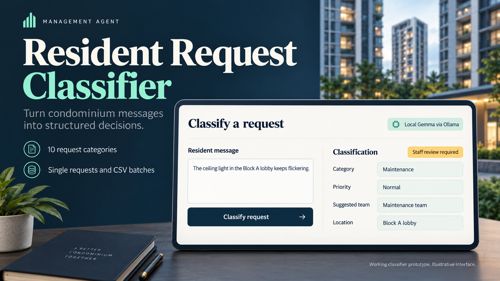
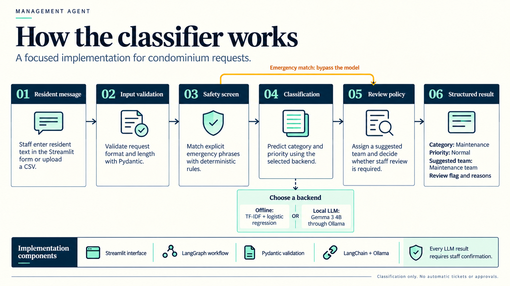

Resident requests.
Structured decisions.
A condominium request classifier that identifies the issue, priority and suggested team, with clear reasons for staff review. Built with Streamlit, LangGraph, an offline baseline and optional local Gemma inference.

The working classifier, in 79 seconds.
A narrated walkthrough of real app captures: resident intake, maintenance, emergency review, batch uploads and evaluation. Demonstration requests are synthetic. Captions are included in the video.
Download MP4 · Download captions
The video shows the offline baseline. Later local gemma3:4b results appear in the slides and README. This presentation page does not run inference; download the project to classify new requests.
How a request becomes a decision.
Validated input flows through safety rules, classification and review policy. The output suggests a category, priority and team; it does not create work tickets or dispatch staff.

Eight slides. The complete project story.
Open a preview at full size, read the PDF, or download the editable PowerPoint. The final startup slide records the original workstation; use the repository README for setup on another machine.


Run it yourself.
Download the repository, install dependencies with uv sync --locked --python 3.12, then run uv run streamlit run app.py. The offline classifier needs no API key. Full setup instructions →